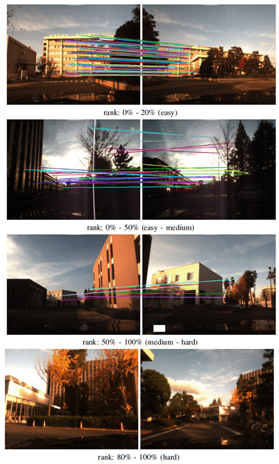
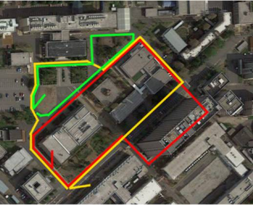
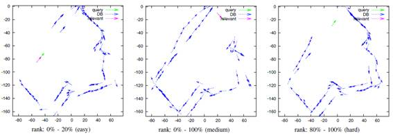
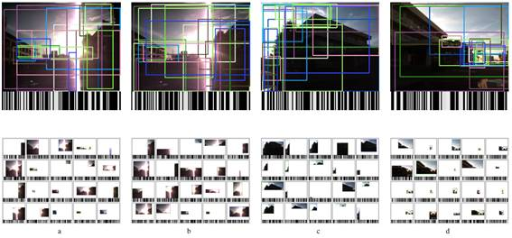
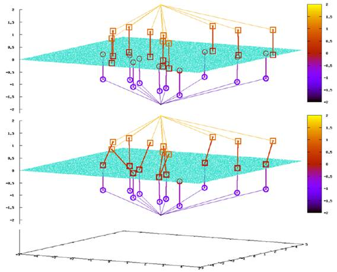
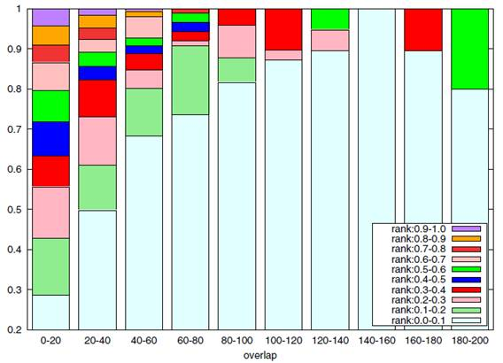
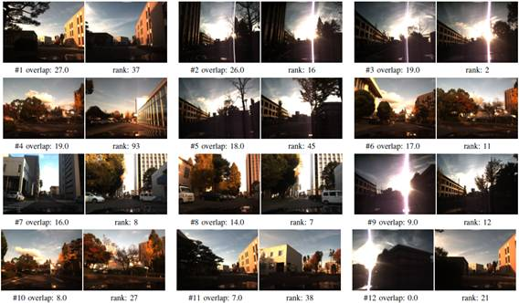
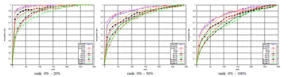
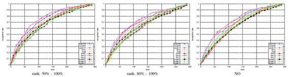

Self-localization from Images with Small Overlap
With the recent success of visual features from deep convolutional neural networks (DCNN) in visual robot self-localization, it has become important and practical to address more general self-localization scenarios. In this paper, we address the scenario of self-localization from images with small overlap. We explicitly introduce a localization difficulty index as a decreasing function of view overlap between query and relevant database images and investigate performance versus difficulty for challenging cross-view self-localization tasks. We
then reformulate the self-localization as a scalable bag-of-visual-features (BoVF) scene retrieval and present an efficient solution called PCA-NBNN, aiming to facilitate fast and yet discriminative correspondence between partially overlapping images. The proposed approach adopts recent findings in discriminativity preserving encoding of DCNN features using principal component analysis (PCA) and cross-domain scene matching using naive Bayes nearest neighbor distance metric (NBNN). We experimentally demonstrate that the proposed PCA-NBNN framework frequently achieves comparable results to previous DCNN features and that the BoVF model is significantly more efficient. We further address an important alternative scenario of “self-localization from images with NO overlap” and report the result.
Members: Kanji Tanaka, Tomoya Murase
Relevant Publication
:
Self-localization from images with small overlap
IEEE/RSJ International Conference on Intelligent Robots and Systems (IROS 2016)
Kanji Tanaka
Bibtex source
,
Document PDF
Acknowledgements:
This work is supported in part by JSPS KAKENHI
Grant-in-Aid for Young Scientists (B) 23700229, and for Scientific Research (C)
26330297.

Fig. 1. Self-localization with different levels of localization difficulty index
(LDI). The LDI of a self-localization task is a decreasing function of view
overlap between the query and relevant database image pair. In experiments,
we employ SIFT matching with VFC verification (colored line segments)
to evaluate the amount of view overlap. All the pairs in the dataset are
evaluated and sorted according in ascending order of LDI. Rank in the sorted
list (normalized by the list’s length) [%] can be viewed as a prediction of
relative difficulty of the corresponding self-localization task. Displayed in
figures are samples from self-localization tasks with four different levels of
ranks [%].

Fig. 2. Experimental environments. Red, yellow, and green lines: viewpoint
paths on which dataset #1, #2, and #3 were collected.

Fig. 3. Sample configurations of viewpoints for different levels of localization difficulties.

Fig. 4. Compact binary landmarks. a, b, c, and d: 4 different examples of a query image (top) being explained by one image-level feature and 20 part-level
features (bottom). Each scene part is further encoded to a 128-bit binary code, which is visualized by a barcode.

Fig. 5. Effect of asymmetric distance computation (ADC). The figures compare the two different encoding schemes, BoW (top) and ADC (bottom), using a toy example of a 2D feature space x - y , in the case of the fine library. In the figures, query/database images are located z = 2/ z = 2, local features extracted from query/database images are located z = 1/ z = 1, and library features (green dots) including NN library features (colored small boxes) are located z = 0. Previous BoW systems (top), which encode both query and database features, frequently fail to identify common library features between query and database images in the case of our fine library. Conversely, ADC, which encodes only database features, not query features, is stable to identify NN library features of individual database features by an online search over the space of library features (i.e., z = 0).

Fig. 6. Performance vs. difficulty. Vertical axis: ratio of self-localization tasks where the ground truth image pair is top- X ranked for ten different ranges of rank X ( X : 0.0-0.1, 0.1-0.2, ... , 0.9-1.0.). Horizontal axis: view overlap in terms of number of VFC matches, which is a decreasing function of localization difficulty index.

Fig. 7. Samples of self-localization tasks. Displayed in figures are samples of self-localization tasks (using “bodw20” algorithm). We uniformly sampled them from the experiments. For each sample, its query image (left) and the relevant database image (right) are displayed with the view overlap score (“overlap”) as well as the localization performance (“rank”). Here, “rank” is the rank assigned to the ground-truth database relevant image, within a ranked list output by the recognition algorithm. From top to bottom, left to right, these samples are displayed in descending order of view overlap (i.e., from easiest to hardest).

Fig. 8. Localization performance on relatively easy localization scenarios.

Fig. 9. Localization performance on relatively hard localization scenarios.
Members Tanaka Kanji, Murase Tomoya, Yanagihara Kentaro
Cross View Localization dataset
The cross season dataset consists of around 15,000 images taken around a
university campus, using a Bumblebee stereo camera. The viewpoint trajectory
has been estimated using a stereo visual odometry and saved in a file ``vo.txt
”
. The estimated trajectory has been further corrected by a graph
SLAM algorithm and saved in ``is.txt
”
.
DOWNLOAD:
cross_view_localization_dataset.zip
Description of files
:
cross_view_localization/
1/
img_dir/*pgm
is.txt
vo.txt
2/
img_dir/*pgm
is.txt
vo.txt
3/
img_dir/*pgm
is.txt
vo.txt
Each line of ``is.txt ” and ``vo.txt ” consists of [x] [y] [\theta].